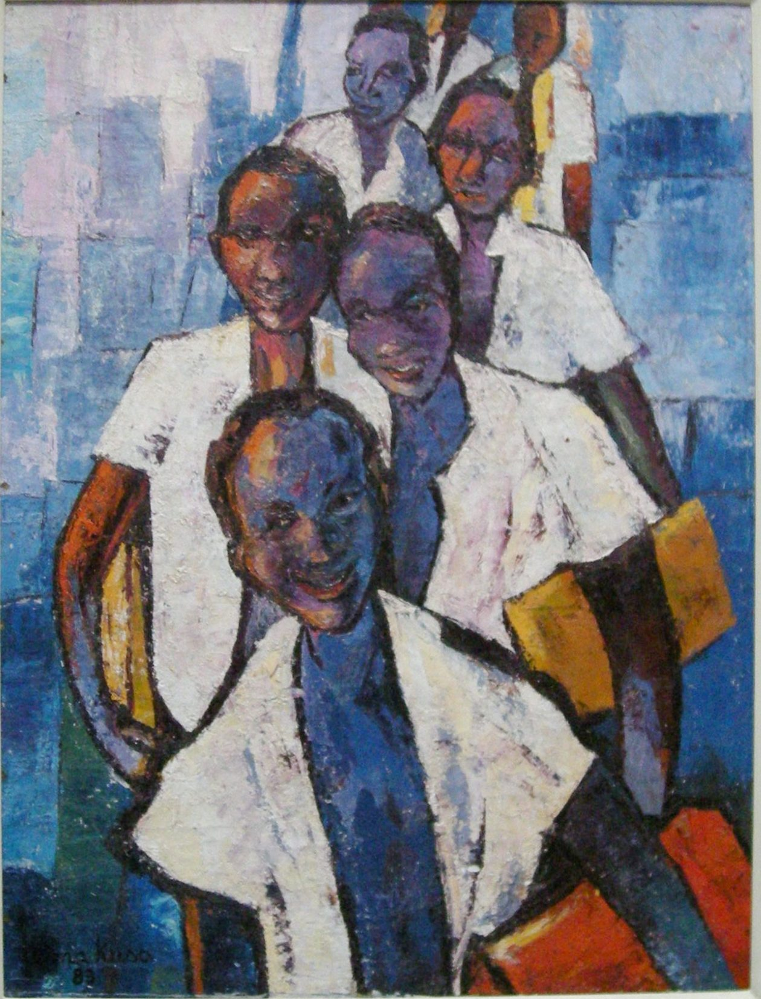

Lema Kusa
B. 1944
Artist Biography
Lema Kusa was born in Kinkenge in Bas-Congo and in 1958 entered the Academy of Fine Arts in Leopoldville (renamed Kinshasa in 1966) where he studied adversting and illustration, achieving his diploma in 1965. He then won a scholarship to study graphic art in Liege, Belgium. On his return to Kinshasa Kusa was appointed a Professor to head up the advertising department at the newly formed Academy of Fine Arts. At the same time as teaching, Kusa in 1974 set up his own design and advertising agency. Throughout this period and since Kusa has continued to paint, using a strong expressionist palette. His subjects were initially drunks, prostitutes and ordinary people though in later years he has concentrated on the female figure. His work was shown in mixed exhibitions in Paris (1975), Basel (1978) and Kinshasa. He had solo shows in 1980 in New York and Alabama.

Untitled, 1983